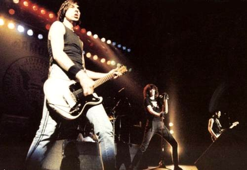

Nuestro país siempre fue reconocido por su fervor y pasión por la música, ha acogido a numerosas bandas internacionales como si fueran propias, estableciendo vínculos duraderos que trascendieron fronteras y generaciones. Quizas los ejemplos más destacados de esta conexión especial sean los Ramones y Megadeth, quienes encontraron en la Argentina un hogar lejos de casa, recibidos con los brazos abiertos por el público argentino.
Los Ramones, pioneros del punk rock, fueron adoptados rápidamente por la audiencia local desde sus primeras visitas al país en la década de 1980. La energía cruda y directa de su música resonó profundamente con los jóvenes argentinos, quienes abrazaron el mensaje rebelde de los Ramones y los convirtieron en íconos de la contracultura en Argentina. A lo largo de los años, la banda realizó numerosas giras por el país, construyendo una relación sólida y duradera con sus fanaticos gauchos y estableciendo su reputación como la banda internacional "más argentina".
Siguiendo los pasos de los Ramones, Megadeth también encontró un público apasionado. Desde sus primeras presentaciones en el país, la banda liderada por Dave Mustaine fue recibida con una entusiasmo desbordante de sus fans criollos, quienes abarrotaron sus conciertos y corearon cada canción con fervor. La conexión entre Megadeth y Argentina fue instantánea, con la banda reconociendo el apoyo inquebrantable de sus seguidores argentinos y expresando su gratitud en cada oportunidad. La relación entre el público argentino y estas dos bandas trasciende la música. Los Ramones y Megadeth fueron honrados y celebrados en nuestro país no solo por su talento musical, sino también por su humildad, autenticidad y devoción hacia sus fanaticos argentinos. Estas bandas dejaron una marca indeleble en la historia musical de Argentina, siendo recordadas como parte integral de la escena musical del país y como símbolos de la pasión y el compromiso del público argentino con la música.

Ramones, año 1987 durante la gira en la que se despedian "Adios, amigos"